Living Draft
The current narrative source of truth is `WHITE_PAPER.md`. It should keep moving with the project instead of becoming a one-off summary.
A hosted, human-readable home for the living white paper: what this project is trying to prove, how Platinum and the games fit together, why the conformance program exists, and how the narrative is versioned over time.
Where this work lives in the repo and how it should be maintained.
The current narrative source of truth is `WHITE_PAPER.md`. It should keep moving with the project instead of becoming a one-off summary.
The `white-paper/` directory is the durable project area for supporting material: the working-area README, citation ledger, and versioned white-paper releases.
Meaningful white-paper revisions should be snapshotted under `white-paper/releases/` so the narrative can be compared over time just like the software.
This generated page is the ongoing hosted, human-readable form. It should stay wired into the same documentation family as the project guide, platform guide, player guide, and release dashboard.
Who this page is for and how it should balance readability with depth.
Assume curiosity, technical interest, and some builder intuition, but do not assume deep platform, browser, arcade, or conformance-program expertise.
The white paper should explain the thesis, architecture, release discipline, evidence program, and AI method clearly without becoming a complete internal manual.
Hosted guides, dashboards, release notes, and source docs should provide the extra detail so the main paper can stay focused and persuasive.
The main ways a reader should enter the white-paper story and related project surfaces.
Jump directly to the current rendered white paper inside this hosted page.
See the maintained list of outside ideas, reference families, and methodological influences.
Return to the broader hosted project map for Platinum, Aurora, Galaxy Guardians, ingestion, conformance, and release state.
Read the shorter public-facing project summary for the current lane.
Open the live score, confidence, cost, and investment dashboard when the narrative needs the measured readout.
Open the repo-owned white-paper project area in GitHub.
Open the current Markdown source directly.
The first durable release pattern for preserving the narrative over time.
The first seeded snapshot of the white paper in browsable release form.
Short note describing what the first white-paper release established and what should happen next.
The next best steps for turning the current seed into a true v1 white-paper release.
The living white paper as it exists in the repo today, rendered into the same hosted-document family as the other project guides.
Generated from WHITE_PAPER.md during build.
Status: living white paper Current draft: v0.2.0-draft Date: 2026-05-16 Audience: broad technical readers, interested builders, collaborators, future reviewers, and public-facing project storytelling
This document is the maintained narrative explanation of what this project is doing, why it is being built this way, and how the approach evolves over time. It is intended to be both a promotional piece and a disciplined reminder to the team: the software, the evidence program, the release process, and the generative-AI workflow all matter together.
See also:
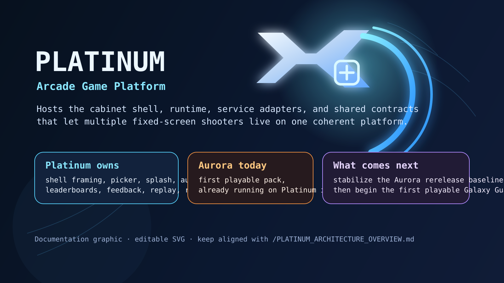
This project is not only a browser game repo.
It is a deliberate attempt to build a professional software program around a harder claim:
of vague taste alone
keep AI-assisted work honest
Platinum is the reusable browser-arcade host. Aurora Galactica is the first shipped application on that host. Galaxy Guardians is the second-game proof that the platform, ingestion program, and conformance discipline can grow beyond a single title.
The larger point is not "we used AI to make a game."
The larger point is that we are building a system in which:
rerunnable artifacts
1. Thesis: what this project is trying to prove.2. Program snapshot: where Platinum, Aurora, and Galaxy Guardians standright now.
3. Five-layer operating model: platform, games, ingestion, harnesses, andrelease economics as one program.
4. Ingestion strategy: how external evidence becomes structured game truth.5. Harnessing and conformance: how we measure quality instead of assertingit.
6. Release discipline: how dev, beta, and production remain explicit andprofessional.
7. Generative AI role: how model work accelerates the project withoutreplacing evidence.
8. Historical evolution: how the project moved from launch to platform tomulti-game conformance.
9. Citation program: how outside ideas and source work should be tracked.10. Living-paper policy: how this white paper should be maintained andreleased over time.
This page is meant to be the readable narrative layer, not the whole archive.
project.
evidence pack.
operational context, jump into the linked hosted documentation rather than making this paper carry everything.
Useful deeper surfaces:
The core thesis of this project is that generative-AI-assisted software can be built aggressively without becoming hand-wavy, fragile, or unprofessional.
That requires a few non-negotiable rules:
accidental
rerunnable checks
increasingly move into local CPU/browser harnesses
This is why Platinum, Aurora, Galaxy Guardians, ingestion, harnesses, scorecards, review packets, and release notes belong in the same story.

The image above is intentionally simple: it reminds the reader that all of the process, evidence, and release discipline in this paper exist in service of a real playable artifact, not only a methodology exercise.
Further detail:
As of 2026-05-16, the project can be described in one page:
| Area | Current role | Why it matters |
|---|---|---|
Platinum | Shipped browser-arcade host platform | Proves that reusable shell, services, lane model, and release discipline can exist without absorbing game-specific truth. |
Aurora Galactica | First shipped playable Platinum application | Serves as the strongest current proof that the platform can host a real public game and improve its conformance over time. |
Galaxy Guardians | Preview-first second-game and first-class ingestion/conformance target | Proves that the platform and the evidence program can support a second game without simply cloning Aurora. |
| Ingestion framework | Source-to-structured-evidence pipeline | Keeps new-game and fidelity work anchored in manifests, clips, event logs, waveforms, contact sheets, and provenance. |
| Harness and conformance system | Scorecards, correspondence checks, dashboards, and gates | Turns quality claims into measurable, reviewable outputs. |
| Release and economics program | Lane discipline, review packets, docs refresh, local-vs-cloud resource accounting | Makes the project look and behave like a professional release program rather than an endless prototype. |
Current maintained metric read:
| Scope | Current read | Interpretation |
|---|---|---|
Aurora Galactica | 9.2/10 release-quality conformance | Strong shipped baseline with known high-value gaps, especially audio identity and later depth. |
Galaxy Guardians reference preview | 7.6/10 | Credible second-game proof, but intentionally not presented as production-ready parity. |
Galaxy Guardians playtest-weighted preview | 6.9/10 | Useful reminder that a game can have process maturity before it has public-readiness maturity. |
| Local-vs-cloud resource split | about 92.8% local wall, about 7.4% declared GPU-equivalent wall | Shows the intended operating doctrine: repeated measurement local, model help strategic. |
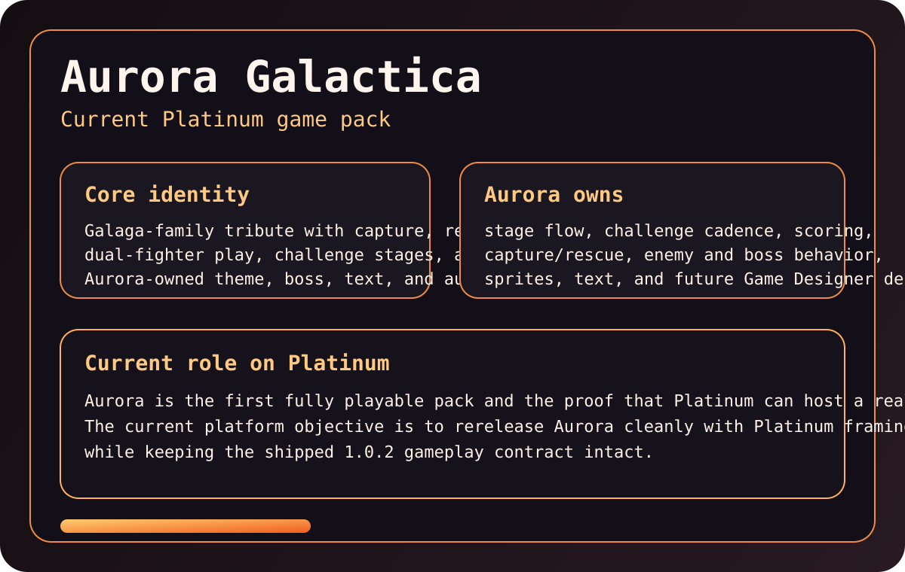
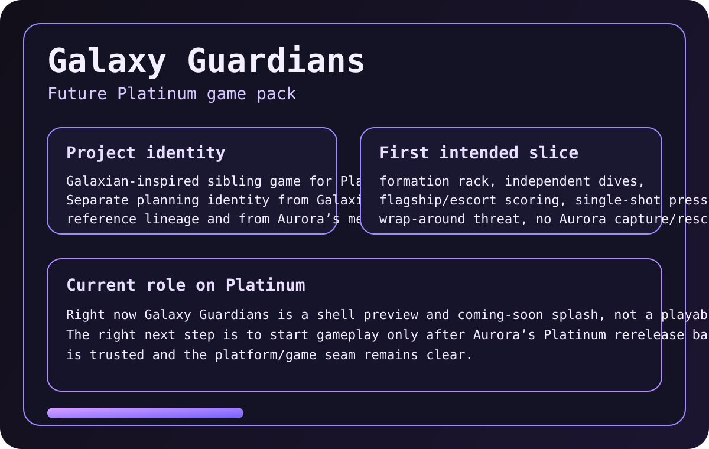
These pack views help a broad reader understand one of the project’s central claims: Aurora Galactica and Galaxy Guardians are not supposed to be two skins on one game. They are meant to be separate applications living on one host platform.
> TODO illustration: > Choose a small three-panel progression strip that shows how the public face > of the project evolved from 1.0.0 launch to 1.2.0 Platinum framing to > 1.4.0 multi-game posture. The most illustrative version may be gameplay > first, shell first, or docs/release-surface first, and we should pick that > deliberately rather than guessing.
Further detail:
The repo already describes the work as a layered system. The white paper should make that model legible at a glance.
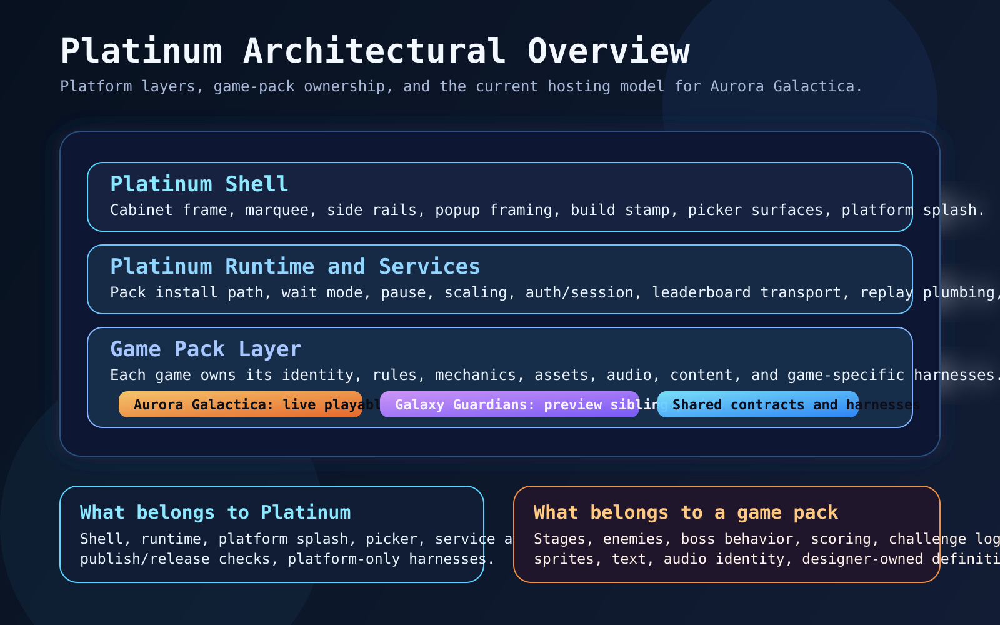
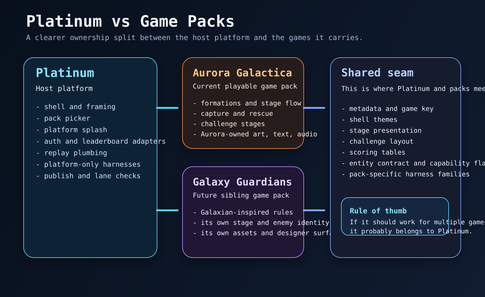
The important discipline is separation of ownership:
Platinum owns shell, hosting, shared services, contracts, and releaseframing.
conformance truth.
When those layers blur, the project becomes harder to explain, harder to test, and easier to accidentally fake.
Further detail:
Ingestion is the front half of engineering, not a side notebook.
The project does not want new games or fidelity improvements to come mainly from memory, vibes, or post-hoc rationalization. Instead, it wants evidence to arrive in structured forms that can be reused:
For Aurora, this keeps Galaga-like timing, audio, pressure, and stage-shape questions grounded in real artifacts.
For Galaxy Guardians, ingestion matters even more. It is the mechanism that prevents the second game from turning into "Aurora with different labels." The game should become more complete by promoting Galaxian evidence into game-owned scoring, wave timing, sprite identity, audio expectations, and runtime correspondence checks.
In short:
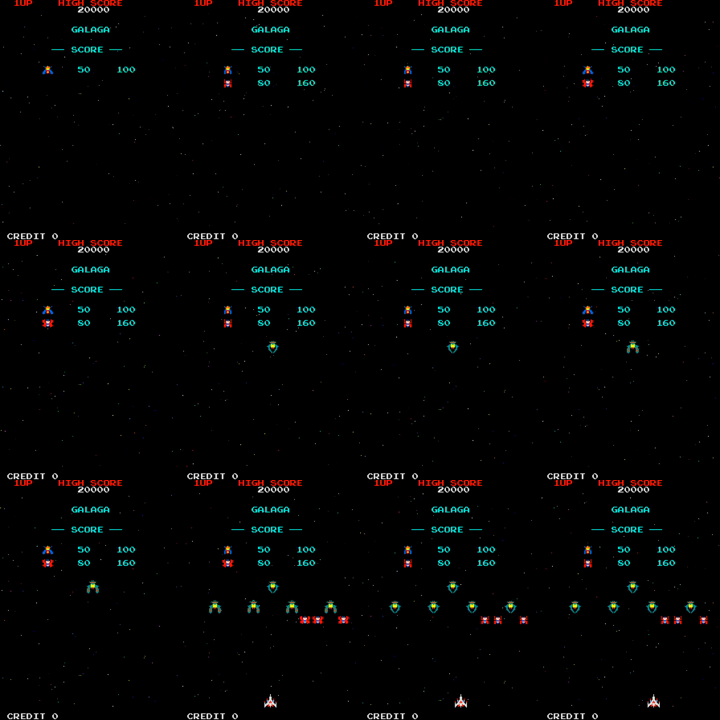
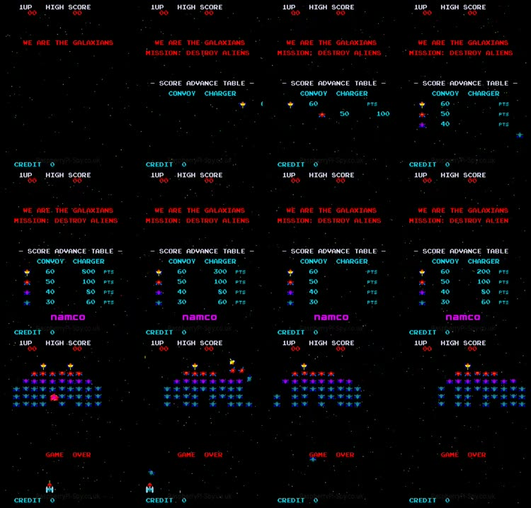
These reference contact sheets are useful because they show the project’s ingestion claim in a form a non-expert can understand quickly. We are not only describing classic arcade behavior; we are collecting windows, studying them, and turning them into reusable evidence.
> TODO illustration: > Pick the single best “ingestion in action” image for v1. The strongest option > might be a contact sheet, a waveform-plus-contact-sheet pair, or a staged > comparison between raw source footage and the structured artifact family that > comes out of it.
Further detail:
This project is serious about the difference between "better" and "better by a rerunnable measure."
The conformance system exists so that quality can be described with more precision than a mood:
The current Aurora scorecard turns this into a twelve-category quality model. That matters for two reasons.
First, it helps choose investments that are actually player-visible.
Second, it protects the team from false confidence. A 10/10 is explicitly not "perfect"; it means "maxed at current scorer resolution." Better evidence or a better evaluator can lower a score while making the project more truthful.
The harness program also stays intentionally classified:
platform harnesses protect shell, hosting, docs, and shared servicesapplication harnesses protect game-specific rules and behaviorboundary harnesses protect the seam between Platinum and the gamesRepresentative committed commands in this strategy include:
npm run harness:measurenpm run review:codenpm run review:ledgernpm run harness:check:galaxy-guardians-first-class-conformanceThis is the deeper quality claim of the project: bugs, polish, and release readiness should increasingly move from memory and opinion into explicit checks, artifacts, and dashboards.
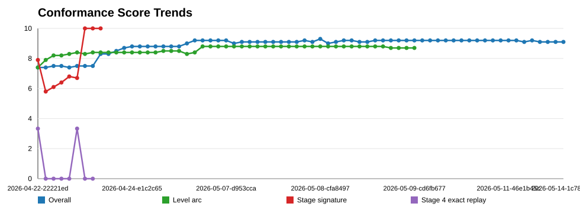
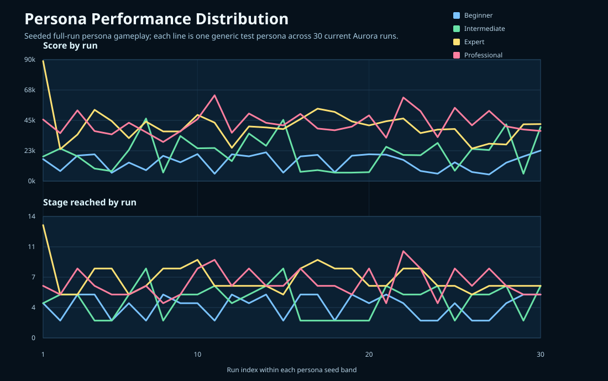
The value of these charts is not only that they look rigorous. They show that the project tries to externalize quality questions into surfaces that can be inspected, debated, and rerun.
Further detail:
The project treats release engineering as part of product quality.
That means the release lanes are not cosmetic:
localhost/dev/beta/productionEach lane carries a different stability promise, documentation expectation, and testing posture. The project is intentionally trying to behave like a software program with real public accountability:
This matters because AI-assisted speed is only impressive if the public result still feels trustworthy.
Further detail:
The project does use generative AI heavily, but not as a substitute for engineering structure.
The intended operating doctrine is:
summarize evidence, and tighten the next decision
regression checks
possible
loop
The repo already describes one part of this explicitly as a "Karpathy-loop-like" pattern:
That is a strong fit for the broader project identity. The point is not merely to ask a model for code. The point is to build a system in which model help leaves behind better evaluators, better artifacts, and cheaper future decisions.
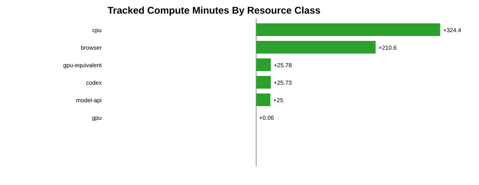
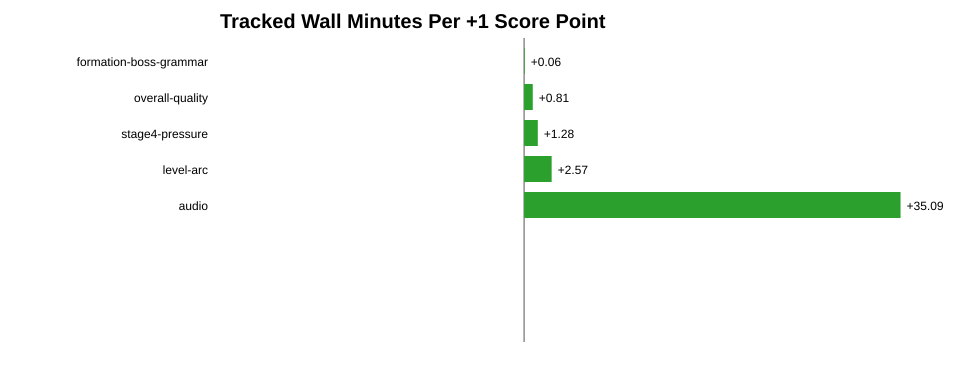
These charts help keep the AI story grounded. The point is not only that model assistance exists; it is that the project is trying to compare that assistance with local repeatable measurement and with visible quality movement.
Further detail:
The operating loop of this project is more important than any single feature.
This loop explains how the project tries to be both aggressive and controlled. The aggressiveness comes from fast iteration and model-assisted leverage. The control comes from evidence, harnesses, explicit ownership boundaries, and release discipline.
> TODO illustration: > Add one compact “question -> evidence -> harness -> change -> rerun” visual > from a real case study. Audio cue alignment, stage-opening timing, or a > Galaxy Guardians reference-promotion slice are the strongest current > candidates, but we should choose the one that is most legible to a broad > reader.
The release notes already show a clear arc, and the white paper should make it easy to retell.
| Release | Meaning | Strategic shift |
|---|---|---|
1.0.0 | First public Aurora launch | The project became a real public product with live scoring, pilot identity, replay visibility, and a real release ladder. |
1.2.0 | Platinum Release 1 | Aurora was reframed as the first application on a reusable platform, making platform/application separation explicit. |
1.4.0 | Current multi-game and conformance baseline | The public line now carries stronger documentation, review evidence, persona/replay follow-through, and a clearer Galaxy Guardians posture. |
This means the project has already moved through three meaningful phases:
identity
The next phase should be to prove that this method scales:
> TODO illustration: > Build a release-history gallery with one screenshot or architectural surface > per milestone. The current paper names the milestones clearly, but a short > visual strip would make the progression easier to absorb at a glance.
Further detail:
This white paper should not quietly absorb ideas from other work without naming them.
We want a maintained citation program that records:
The living ledger for that work starts here:
The first open citation debt is the prior standalone assessment of the Karpathy-style research/evaluator loop. The repo contains the conceptual thread already, but the older assessment should be recovered and linked directly in a future white-paper release rather than reconstructed from memory.
Further detail:
The project matters because it is trying to demonstrate a concrete alternative to two weak extremes.
It is not:
Instead, it aims for a middle path:
If that works, the result is more than a good arcade project. It becomes a useful pattern for how generative AI can participate in professional software work without dissolving quality standards.
This is also why the paper should remain readable. A broad technical reader does not need every source artifact inline. They need a coherent narrative, selected visual proof, and obvious places to go next if they want more depth.
This document should evolve the same way the project evolves: intentionally, versioned, and with historical memory preserved.
Working policy:
WHITE_PAPER.md is the current living draftwhite-paper/releases/project story
every strategic narrative shift probably does
Good triggers for a new white paper release:
this repo.
notes.
“evidence in action” case-study image once we decide which examples explain the project most clearly.
interest, assume intelligence, but do not assume deep prior expertise.
Maintained list of outside ideas, source families, how they were used, and what still needs to be recovered or tightened.
Generated from white-paper/CITATION_LEDGER.md during build.
This ledger tracks source families, methodological influences, and outside ideas that materially shape the project story.
The goal is not only to cite things. The goal is to record:
linked: the reference is represented clearly enough in the repo todaypartial: the idea is present, but the exact earlier note, external source,or final public citation still needs to be recovered or tightened
queued: important enough to track now, but not yet integrated well enoughto claim as a polished citation
| Reference | Kind | How we use it | What we learned | Current repo anchor | Status |
|---|---|---|---|---|---|
| Karpathy-style evaluator loop and earlier project assessment | conceptual / methodological | Shapes the idea that we should inspect concrete examples, improve evaluators, make small candidate changes, rerun, and study failures instead of tuning only by opinion. | Better evaluators can be as important as better runtime code. A stricter scorer can lower a score while making the project more truthful. | PROJECT_STATE_AND_CONFORMANCE_PROGRAM.md, CONFORMANCE_ECONOMICS.md, RELEASE_NOTE_1.3.0.1_HOSTED_DEV_REVIEW.md | partial |
| Galaga gameplay footage, manuals, clips, and extracted artifacts | reference corpus | Grounds Aurora timing, audio, stage cadence, visual comparison, and correspondence work in preserved material. | Manual impressions are useful, but clipped windows, event logs, and aligned audio/visual artifacts make fidelity work reviewable and reusable. | reference-artifacts/, VIDEO_ALIGNMENT_PROGRAM.md, CORRESPONDENCE_FRAMEWORK.md | linked |
| Galaxian gameplay footage and sibling-game source package | reference corpus | Grounds Galaxy Guardians in its own source lineage so the game can become a true sibling application rather than a relabeled Aurora variant. | Ingestion is most valuable when it arrives before design hardens. Second-game credibility depends on game-owned evidence, not borrowed first-game behavior. | CLASSIC_ARCADE_INGESTION_FRAMEWORK.md, APPLICATIONS_ON_PLATINUM.md, CONFORMANCE_METRICS_OVERVIEW.md | linked |
| Review packet and review-learning ledger model | operational discipline | Makes AI-assisted and fast-moving changes reviewable through durable packets, issue categories, and production dispositions. | Review value compounds when repeated findings become harnesses, release checks, or documented non-goals instead of disappearing into chat. | CODE_REVIEW_MODEL.md, REVIEW_LEARNING_LEDGER.md | linked |
| Local-first compute doctrine for conformance work | operating doctrine | Pushes repeated measurement into local CPU/browser harnesses while reserving model work for strategy, synthesis, evaluator design, and selected analysis. | The project becomes cheaper and more trustworthy when model assistance leaves behind committed local logic and measurable artifacts. | CONFORMANCE_ECONOMICS.md, PROJECT_STATE_AND_CONFORMANCE_PROGRAM.md | linked |
current conceptual placeholder with a precise internal or external citation.
paper versus remaining internal working influences.
circulation beyond the repo.
Working list of selected visuals, candidate deeper assets, and the open illustration choices that still need deliberate discussion.
Generated from white-paper/ILLUSTRATION_PLAN.md during build.
This document tracks the visuals that support the white paper, the deeper reference materials that should stay nearby in hosted docs, and the places where we still need to choose the most illustrative image or chart deliberately.
artifact.
source documents instead of overloading the main narrative.
the decision debt here.
| White-paper section | Current asset | Why it works |
|---|---|---|
| Overview / thesis | reference-artifacts/diagrams/platinum/platinum-hero.svg | Gives the paper an immediate project identity and platform-level frame. |
| Thesis | export.mov.png | Shows that the evidence and release program serve a real playable artifact. |
| Program snapshot | reference-artifacts/diagrams/platinum/aurora-pack-card.svg | Makes Aurora legible as an application on the platform. |
| Program snapshot | reference-artifacts/diagrams/platinum/galaxy-guardians-pack-card.svg | Shows second-game identity without requiring a long explanation. |
| Five-layer operating model | reference-artifacts/diagrams/platinum/platinum-platform-stack.svg | Reinforces platform-versus-application separation. |
| Five-layer operating model | reference-artifacts/diagrams/platinum/platinum-pack-separation.svg | Helps explain ownership boundaries at a glance. |
| Ingestion strategy | reference-artifacts/analyses/galaga-stage-opening-timing/2026-04-12-main-a777fba/opening-contact-tight.png | Makes ingestion concrete through a visible reference-study artifact. |
| Ingestion strategy | reference-artifacts/analyses/galaxian-reference/matt-hawkins-arcade-intro/frames/contact-sheet-reference-window.jpg | Supports the claim that Galaxy Guardians is grounded in its own source family. |
| Harnessing and conformance | reference-artifacts/analyses/conformance-economics/2026-05-14-1c788342/score-trends.svg | Turns progress into an at-a-glance measurable story. |
| Harnessing and conformance | reference-artifacts/analyses/persona-performance-distribution/performance-lines.svg | Shows that quality is evaluated across viewpoints, not through one metric alone. |
| Release and economics | reference-artifacts/analyses/conformance-economics/2026-05-14-1c788342/compute-minutes-by-resource.svg | Makes local-first measurement strategy visible. |
| Release and economics | reference-artifacts/analyses/conformance-economics/2026-05-14-1c788342/cost-per-positive-score-point.svg | Connects release ambition to investment discipline. |
These are better linked from hosted guides or follow-on detail pages than pushed directly into the main narrative unless a specific section needs them.
reference-artifacts/analyses/conformance-economics/2026-05-14-1c788342/largest-score-deltas.svgreference-artifacts/analyses/conformance-economics/2026-05-14-1c788342/gpu-equivalent-use-by-purpose.svgreference-artifacts/analyses/conformance-economics/2026-05-14-1c788342/cpu-use-by-purpose.svgreference-artifacts/analyses/conformance-economics/2026-05-14-1c788342/gameplay-improvement-by-project-part.svgconformance-dashboard.htmlrelease-dashboard.htmlproject-guide.htmlpublic-project-page.html1.0.0 public game surface1.2.0 Platinum framing surface1.4.0 multi-game and conformance surfacearchitecture, or public release/documentation maturity?
non-expert reader in one glance?
kept honest by rerunnable evidence?
release-led?
release lanes on a single page.
How the project area is organized and when new narrative snapshots should be cut.
Generated from white-paper/README.md during build.
This directory holds the durable support files for the project white paper.
The white paper is meant to be both:
Guardians, ingestion, harnessing, conformance, and release discipline are trying to achieve
and how the method evolves over time
../WHITE_PAPER.mdCITATION_LEDGER.mdILLUSTRATION_PLAN.mdreleases/<date>-v<version>/WHITE_PAPER.mdreleases/<date>-v<version>/RELEASE_NOTES.md../WHITE_PAPER.md directly while shaping the next narrative draft.way.
per tiny wording edit.
methodological influences materially shape the paper.
or hosted-detail surface becomes important to the white-paper story.
The first seeded snapshot is:
releases/2026-05-16-v0.1.0/This establishes the initial narrative baseline, the release structure, and the citation ledger.
Release note for the first seeded white-paper snapshot.
Generated from white-paper/releases/2026-05-16-v0.1.0/RELEASE_NOTES.md during build.
Release: 2026-05-16-v0.1.0 Date: 2026-05-16 Type: foundational narrative release
This is the first seeded release of the project white paper.
It establishes:
ingestion, harnessing, conformance, release discipline, and AI-assisted engineering
recovered and linked directly
promotion, collaborator onboarding, or AI-method storytelling